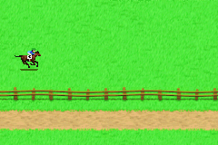
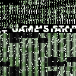

Derby Stallion Advance (Japan)
Flash 512K VRAM Tile Sheet
Cartridge Identity
- Game Code
A8PJ(FamilyA8P)- Header Title
PBDRBYSTLON- Maker / Revision
CP/ rev0- ROM Size
- 4.0 MiB (4,194,304 B)
- Save Media
Flash 512K- SHA-256
7c9d6f6db5b655b2b87710598c627e450ae5c73316de4335e79ad00a8907fcaa- Engine / SDK Group
comm-063(2 families)
Screenshots

Observed Battery Save Layout
- Fill Byte & Active Size
0xFFfill · 24,574–24,574 / 65,536 B active (entropy 0.00 bits/B)- Active Offset Ranges
0xA000–0xE001,0xE004–0xFFFF(2 total)- ASCII Magic / Headers
- None detected
- Observed Variable Regions
- 0 bytes across 0 spans: None
- Candidate Checksum/Counter Spans
- None
ROM Assets, Compression & Audio
- BIOS Compression
- LZ77 (
0x10): 1,545 streams · RLE (0x30): 0 streams - ROM Pointer Tables
- 142 tables (14 pointing to validated compressed streams)
- SDK Backup Tags
FLASH_V126- VRAM / Palette Snapshot
- 842 non-zero 8×8 tiles · 24 palettes · Direct ROM matches: 0 VRAM blocks, 0 palette blocks

Hardware MMIO Subsystems
ppu_display0x8061dc8,0x8061e9csave_bus_sram_flash0x806b40c,0x806b76c,0x806b818,0x806ba00